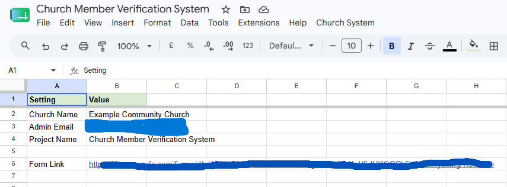
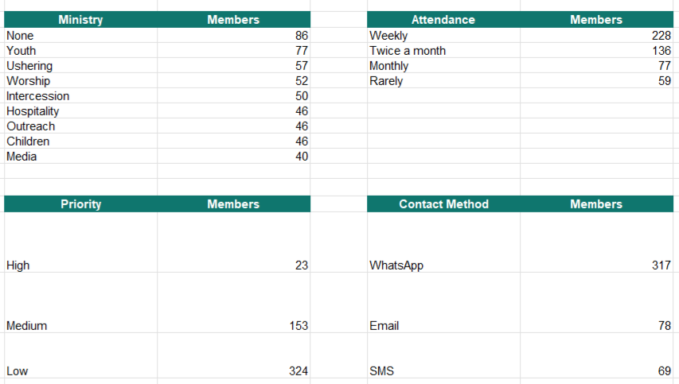
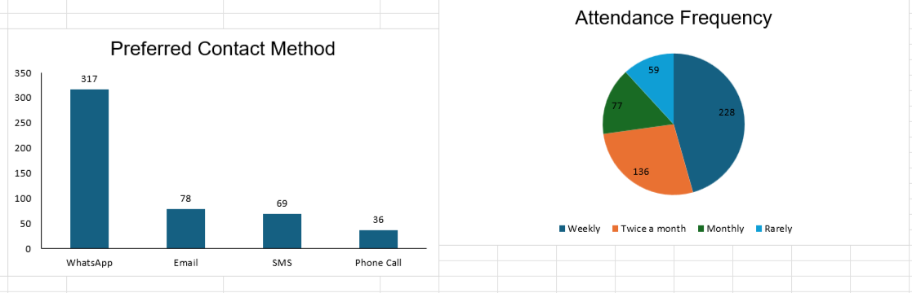
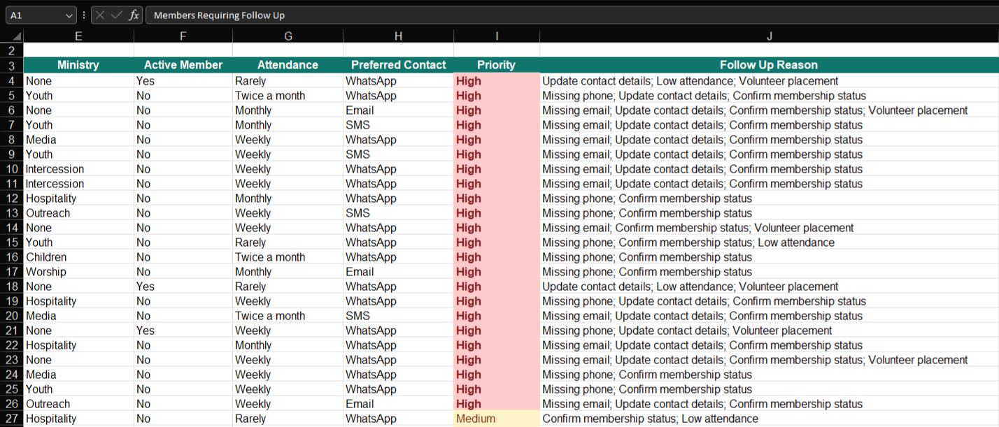
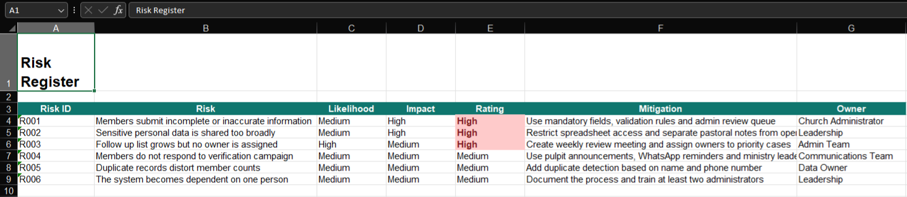

Requirements Analysis
Defined the information needed to verify members, identify gaps, and support leadership decisions.
A structured verification workflow that improves membership data quality, follow-up prioritization, risk visibility, and executive reporting.
This case study combines requirements analysis, stakeholder focused reporting, operating model design, risk management, Google Sheets dashboards, Google Forms intake, and Google Apps Script automation to transform a manual church administration process into a governed data-driven workflow.
The Church Member Verification System is a Business Analysis and Process Improvement project designed to address a common operational challenge faced by many community organizations: maintaining accurate member records while ensuring leadership has visibility into engagement, communication effectiveness, and follow-up requirements.
The project combines Business Analysis, operational reporting, process design, stakeholder focused insights, and Google Apps Script automation to transform a traditionally manual process into a structured, data-driven workflow.
Built using Google Forms, Google Sheets, and Google Apps Script, the solution automates member verification, identifies data quality issues, prioritizes follow-up activities, and provides executive level reporting to support decision making.
Google Apps Script, Google Sheets, Google Forms, Business Analysis, Dashboarding, Process Improvement.
Church leadership often relies on member databases that gradually become outdated as contact details change, attendance patterns shift, and members become inactive.
The objective was to design a scalable verification process that improves data quality, supports engagement initiatives, and provides actionable insights for leadership.
As the Business Analyst and Solution Designer, I translated an operational administration problem into a structured solution covering requirements, workflow design, reporting, automation, governance, and executive recommendations.
Defined the information needed to verify members, identify gaps, and support leadership decisions.
Designed views for administrators, pastoral teams, ministry leads, communications teams, and leadership.
Moved the process from ad hoc follow ups to a controlled verification and review workflow.
Created ownership, cadence, risk controls, and prioritization rules to support ongoing use.
The solution consists of four integrated components: a structured member verification form, a centralized member database, automated business logic, and an executive reporting layer.


Tracks active membership, data quality, volunteer interest, contact accuracy, attendance, and follow-up volume.
Flags members requiring intervention based on missing information, inactive status, low attendance, and volunteer placement opportunities.
Converts observations into business implications, recommended actions, owners, and priority levels.
Documents operational risks, likelihood, impact, rating, mitigation actions, and accountable owners.

The solution generated and analyzed a membership dataset containing 500 records. Analysis focused on membership health, communication strategy, attendance patterns, volunteer pipeline opportunities, and data quality risks.
member records analyzed
active membership rate
members requiring follow up
data quality score



A key objective was reducing manual administrative effort while keeping reporting repeatable. Google Apps Script was used to automate member record creation, validation logic, dashboard generation, follow-up workflows, reporting updates, and form integration.

Rather than presenting raw metrics only, the solution translates analytical findings into business recommendations with owners, priorities, and mitigation actions.



Requirements analysis, stakeholder analysis, gap analysis, operating model design, risk assessment, and business process design.
KPI development, dashboard design, executive reporting, data quality analysis, trend analysis, and insight generation.
Google Apps Script workflows, reporting automation, form integration, validation logic, and repeatable refresh processes.
Follow-up prioritization, process standardization, governance cadence, control design, and accountability mapping.
Analyzed a 500 member dataset to measure membership status, contact quality, attendance, and engagement signals.
Created a repeatable verification process using Google Forms, Google Sheets, and Google Apps Script.
Built leadership reporting for KPIs, ministry activity, attendance, contact preferences, and follow-up reasons.
Designed a follow-up framework to focus attention on high priority records first.
Created a register with likelihood, impact, mitigation, ownership, and operating controls.
Flagged missing or incorrect information and made quality visible through dashboard metrics.
This project demonstrates how Business Analysis, process improvement, automation, and analytics can be combined to solve a real operational challenge.
By introducing structured verification workflows, automated reporting, executive dashboards, follow-up prioritization, and governance controls, the solution provides leadership with the visibility and tools needed to make more informed decisions while reducing administrative overhead.